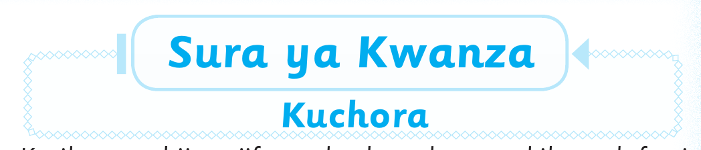
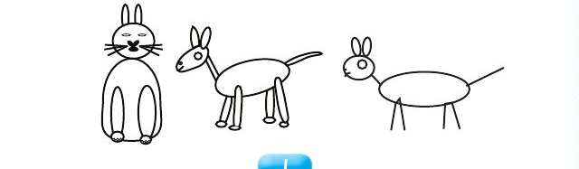

Sura ya Kwanza — Somo la kwanza

Sura ya Kwanza
Kuchora
Katika sura hii utajifunza kuchora kwenye kibao, daftari
na kupaka rangi.
Somo la kwanza
Kuchora kwenye kibao
Katika somo hili utajifunza kuchora kwenye kibao.
Chora ndege hawa kwenye kibao.

Andika jibu kwa mkono katika sehemu hii.
Chora wadudu hawa kwenye kibao.


Andika jibu kwa mkono katika sehemu hii.
Chora wanyama hawa kwenye kibao.

Andika jibu kwa mkono katika sehemu hii.